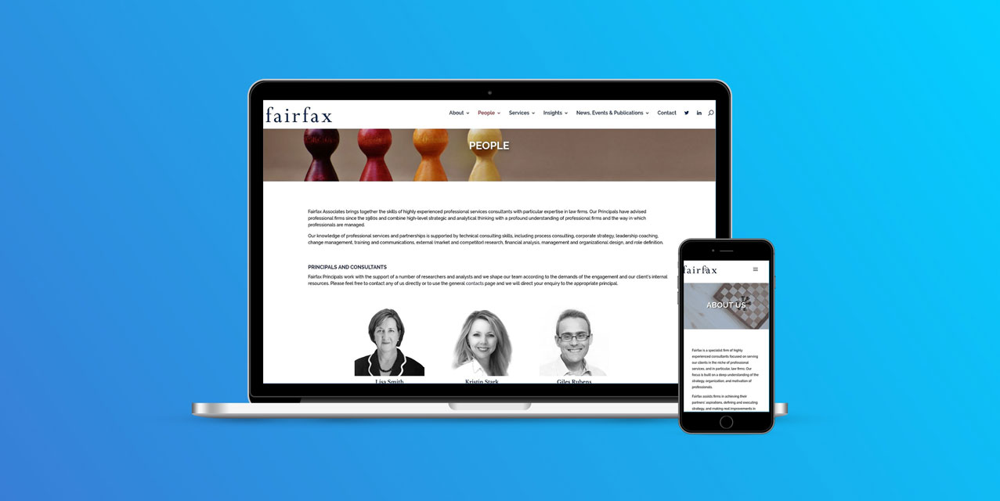

Fairfax Website Redesign
- Client: Fairfax Associates
- Launch progect
A new look for a strategy & management consulting firm focused on legal indsutry.

The firm wanted their culture and experience to be exuded on the new site. With that goal in mind, Good2bSocial leveraged a unique layout and compelling imagery to demonstrate that Fairfax is a modern firm and to give prospective clients a view behind the curtain at the group's collaborative environment. The new site was built responsively to make sure it looks great across devices and browsers. It is built on an intuitive content management system, allowing the firm to have full control over the site's content and to scale the site over time. Site visitors are tracked through analytics to help the firm know how people are using the site.

Additionally, throughout the site, related news, relevant transactions, associated attorneys, and more information is fed to different pages. This tactic continually demonstrates the firm's depth of experience throughout the site and also encourages visitors to go deeper on the site and learn more about how the firm can help them. These different content feeds connoted a dynamic firm well suited to serve your needs.
The site also lets visitors quickly determine their own journey and content path by presenting the three practice groups upfront and letting visitors discover the services within each group. This approach lets visitors engage with the content on their own terms and quickly gets them to relevant areas of the site.